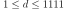
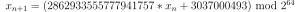
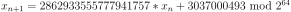

SobolSequence¶
(Source code, png, hires.png, pdf)
{kind=link}
{kind=link}
- class SobolSequence(*args)¶
Sobol sequence.
- Available constructors:
SobolSequence(dimension=1)
- Parameters
- dimensionpositive int, 
Dimension of the points.
Examples
>>> import openturns as ot >>> sequence = ot.SobolSequence(2) >>> print(sequence.generate(5)) 0 : [ 0.5 0.5 ] 1 : [ 0.75 0.25 ] 2 : [ 0.25 0.75 ] 3 : [ 0.375 0.375 ] 4 : [ 0.875 0.875 ]
Methods
ComputeStarDiscrepancy(sample)Compute the star discrepancy of a sample uniformly distributed over [0, 1).
generate(*args)Generate a sample of pseudo-random vectors of numbers uniformly distributed over [0, 1).
Accessor to the object's name.
Accessor to the dimension of the points of the low discrepancy sequence.
getId()Accessor to the object's id.
getName()Accessor to the object's name.
Accessor to the linear congruential generator (LCG) used to scramble the sequences.
Accessor to the object's shadowed id.
Accessor to the object's visibility state.
hasName()Test if the object is named.
Test if the object has a distinguishable name.
initialize(dimension)Initialize the sequence.
setName(name)Accessor to the object's name.
setScramblingState(state)Accessor to the linear congruential generator (LCG) used to scramble the sequences.
setShadowedId(id)Accessor to the object's shadowed id.
setVisibility(visible)Accessor to the object's visibility state.
- __init__(*args)¶
- static ComputeStarDiscrepancy(sample)¶
Compute the star discrepancy of a sample uniformly distributed over [0, 1).
- Parameters
- sample2-d sequence of float
- Returns
- starDiscrepancyfloat
Star discrepancy of a sample uniformly distributed over [0, 1).
Examples
>>> import openturns as ot >>> # Create a sequence of 3 points of 2 dimensions >>> sequence = ot.LowDiscrepancySequence(ot.SobolSequence(2)) >>> sample = sequence.generate(16) >>> print(sequence.computeStarDiscrepancy(sample)) 0.12890625 >>> sample = sequence.generate(64) >>> print(sequence.computeStarDiscrepancy(sample)) 0.0537109375
- generate(*args)¶
Generate a sample of pseudo-random vectors of numbers uniformly distributed over [0, 1).
- Parameters
- sizeint
Number of points to be generated. Default is 1.
- Returns
- sample
Sample Sample of pseudo-random vectors of numbers uniformly distributed over [0, 1).
- sample
Examples
>>> import openturns as ot >>> # Create a sequence of 3 points of 2 dimensions >>> sequence = ot.LowDiscrepancySequence(ot.SobolSequence(2)) >>> print(sequence.generate(3)) 0 : [ 0.5 0.5 ] 1 : [ 0.75 0.25 ] 2 : [ 0.25 0.75 ]
- getClassName()¶
Accessor to the object’s name.
- Returns
- class_namestr
The object class name (object.__class__.__name__).
- getDimension()¶
Accessor to the dimension of the points of the low discrepancy sequence.
- Returns
- dimensionint
Dimension of the points of the low discrepancy sequence.
- getId()¶
Accessor to the object’s id.
- Returns
- idint
Internal unique identifier.
- getName()¶
Accessor to the object’s name.
- Returns
- namestr
The name of the object.
- getScramblingState()¶
Accessor to the linear congruential generator (LCG) used to scramble the sequences.
- Returns
- stateint
The state of the LCG, defined by the recursion .
- getShadowedId()¶
Accessor to the object’s shadowed id.
- Returns
- idint
Internal unique identifier.
- getVisibility()¶
Accessor to the object’s visibility state.
- Returns
- visiblebool
Visibility flag.
- hasName()¶
Test if the object is named.
- Returns
- hasNamebool
True if the name is not empty.
- hasVisibleName()¶
Test if the object has a distinguishable name.
- Returns
- hasVisibleNamebool
True if the name is not empty and not the default one.
- initialize(dimension)¶
Initialize the sequence.
- Parameters
- dimensionint
Dimension of the points of the low discrepancy sequence.
Examples
>>> import openturns as ot >>> # Create a sequence of 3 points of 2 dimensions >>> sequence = ot.LowDiscrepancySequence(ot.SobolSequence(2)) >>> print(sequence.generate(3)) 0 : [ 0.5 0.5 ] 1 : [ 0.75 0.25 ] 2 : [ 0.25 0.75 ] >>> print(sequence.generate(3)) 0 : [ 0.375 0.375 ] 1 : [ 0.875 0.875 ] 2 : [ 0.625 0.125 ] >>> sequence.initialize(2) >>> print(sequence.generate(3)) 0 : [ 0.5 0.5 ] 1 : [ 0.75 0.25 ] 2 : [ 0.25 0.75 ]
- setName(name)¶
Accessor to the object’s name.
- Parameters
- namestr
The name of the object.
- setScramblingState(state)¶
Accessor to the linear congruential generator (LCG) used to scramble the sequences.
- Parameters
- stateint
The state of the LCG, defined by the recursion .
- setShadowedId(id)¶
Accessor to the object’s shadowed id.
- Parameters
- idint
Internal unique identifier.
- setVisibility(visible)¶
Accessor to the object’s visibility state.
- Parameters
- visiblebool
Visibility flag.